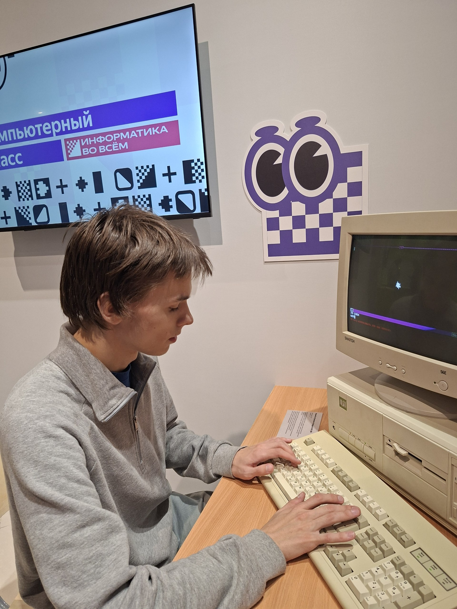
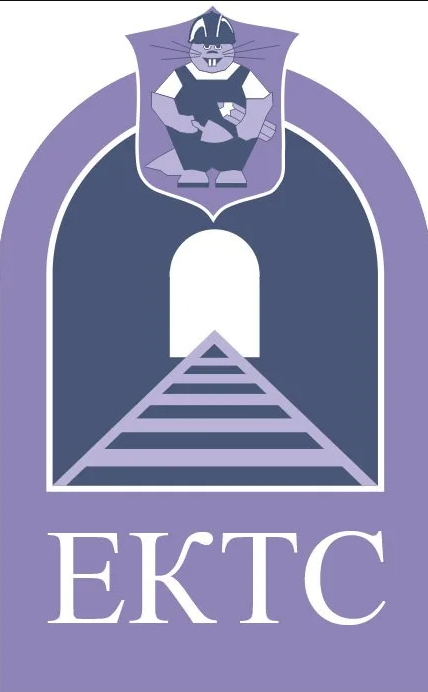
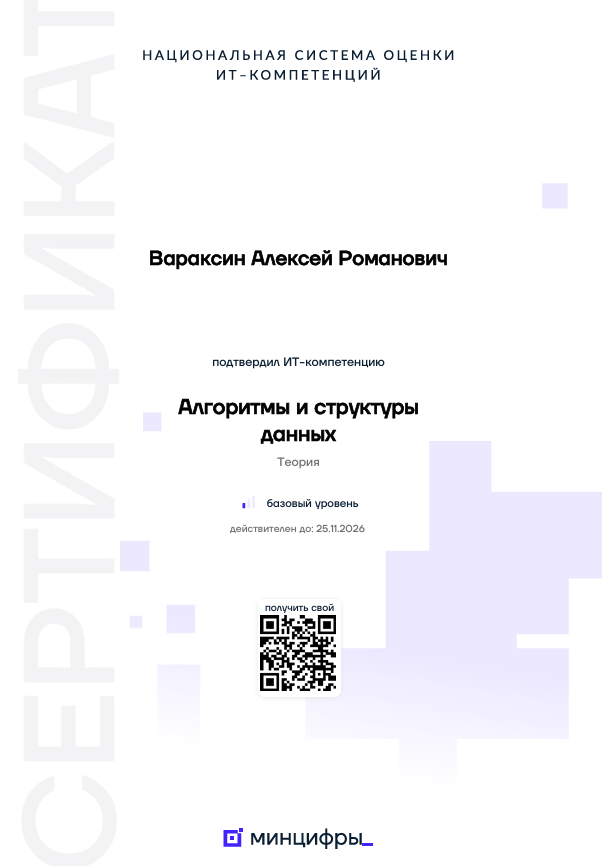
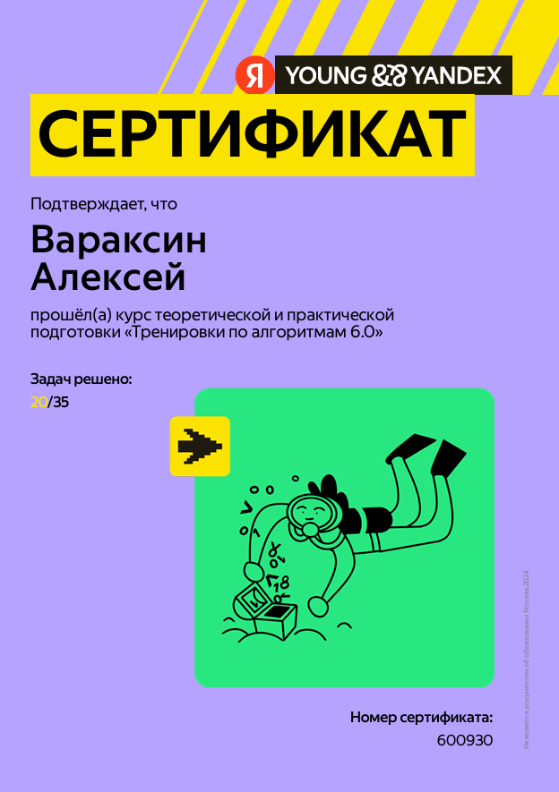
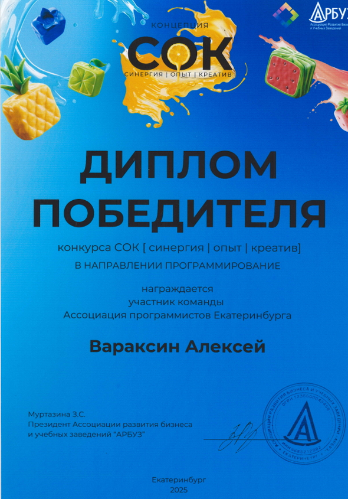
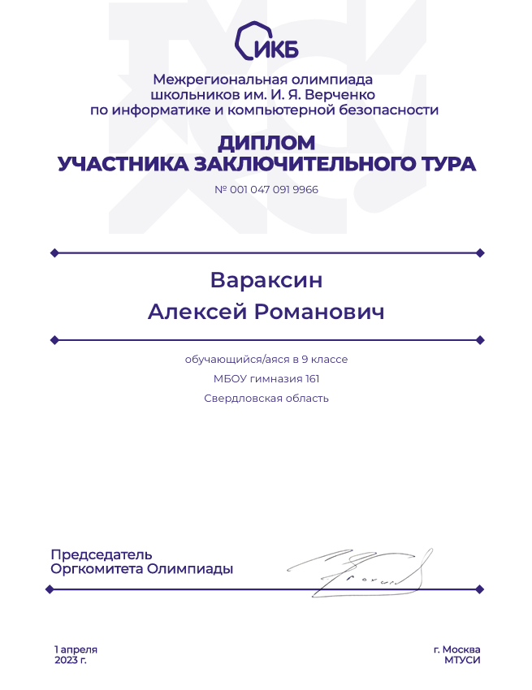
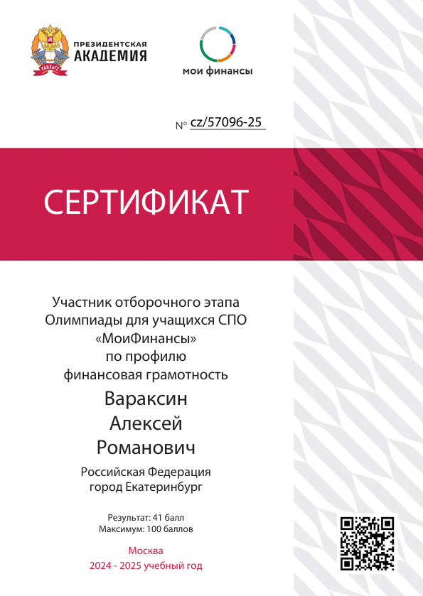
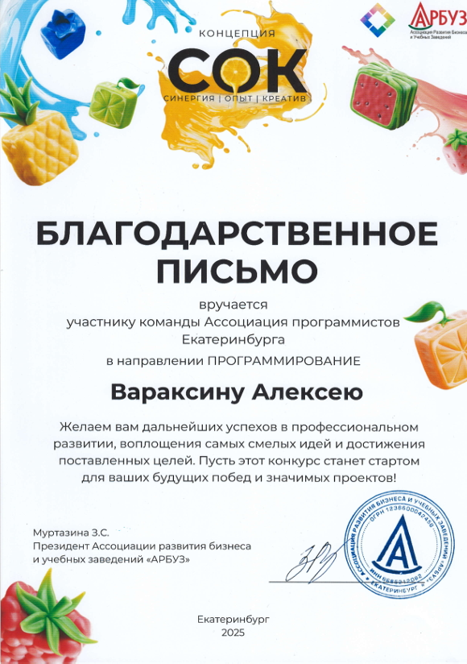
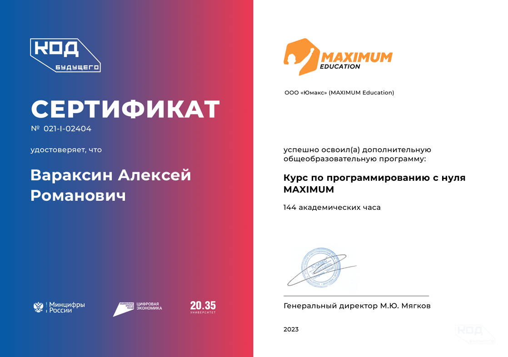
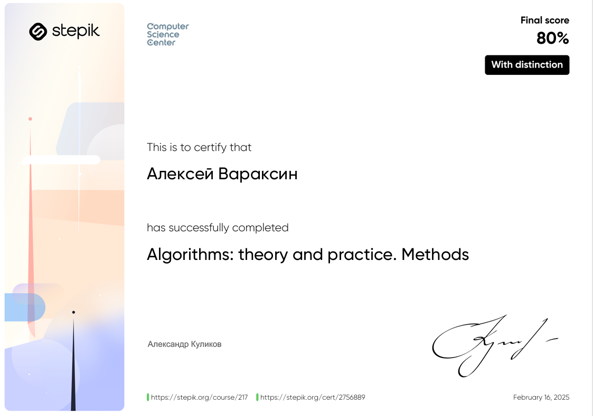

Разрабатываю цифровые решения. Опыт работы с документами в госорганизации. Студент, участник партпроектов.

Действуйщий программист. Регулярно участвую в профильных мероприятиях Яндекса, Контура, Сбера и других ИТ-компаний. Владею навыками нейрогенерации контента.
Имею опыт работы техническим секретарём в госорганизации. Исполнителен, ответственен, имею грамотно вести делопроизводство — есть официальная рекомендация.
Есть опыт коммерческой работы в разных ролях: как исполнитель, так и как руководитель (команды специалистов в конкурсе).
Член МОП Единой Росии. Это дает мне понимание текущей повестки, национальных проектов и специфики работы публичной власти.

Направление: «09.02.07 Информационные системы и программирование»
3 курсСертификаты и дипломы, подтверждающие профессиональные компетенции

Аккредитация МинЦифры

Тренировки по алгоритмам от Яндекса

Победитель конкурса АРБУЗ

Финалист олимпиады ФСБ

Фин. грамотность РАНХиГС

Благодарность

Сертификат кода будущего от МинЦифры

Сертификат с отличием по алгоритмам от CSC
Моменты, когда получилось попасть в кадр
Ростелеком
Холодные продажи, консультирование клиентов
Ресторан
Обслуживание гостей, работа в команде
Вкусно — и точка
Работа в сфере быстрого питания, клиентский сервис, исполнительность
ЕКТС
Ведение документации и архивация
ВелеЭко
Разработка сайтов, поддержка проектов
Текущее местоПодтверждают важные навыки, необходимые на стажировке
Погрузиться в работу над государственными цифровыми проектами Свердловской области и понять процессы цифровизации изнутри
Научиться принимать решения на уровне региона, понять внутренние процессы Минцифры и перенять лучшие практики у экспертов в области государственного управления